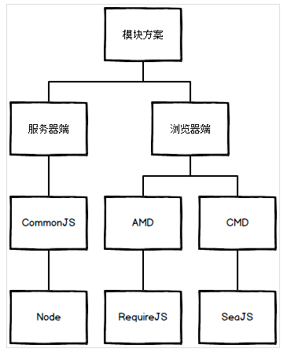

为什么要使用模块化？
前端开发中，起初只要在script标签中嵌入几十上百行代码就能实现一些基本的交互效果，后来js得到重视，应用也广泛起来了，jQuery，Ajax，Node.Js，MVC，MVVM等的助力也使得前端开发得到重视，也使得前端项目越来越复杂，然而，JavaScript却没有为组织代码提供任何明显帮助，甚至没有类的概念，更不用说模块（module）了，那么什么是模块呢？
一个模块就是实现特定功能的文件，有了模块，我们就可以更方便地使用别人的代码，想要什么功能，就加载什么模块。模块开发需要遵循一定的规范，否则就都乱套了。
模块化的目的
- 解决命名冲突
- 依赖管理
- 提高代码可读性
- 代码解耦，提高复用性
CMD、AMD、CommonJS 规范分别指什么？有哪些应用

CommonJS
CommonJS是服务器端模块的规范，Node.JS采用了这个规范。Node.JS首先采用了js模块化的概念。根据CommonJS规范，一个单独的文件就是一个模块。每一个模块都是一个单独的作用域，也就是说，在该模块内部定义的变量，无法被其他模块读取，除非定义为global对象的属性。
输出模块变量的最好方法是使用module.exports对象。
AMD
AMD 即Asynchronous Module Definition，中文名是“异步模块定义”的意思。它是一个在浏览器端模块化开发的规范，服务器端的规范是CommonJS，模块将被异步加载，模块加载不影响后面语句的运行。所有依赖某些模块的语句均放置在回调函数中。AMD是 RequireJS 在推广过程中对模块定义的规范化的产出。
CMD
CMD 即 Common Module Definition 通⽤模块定义，CMD规范是国内发展出来的，就像AMD有个requireJS，CMD有个浏览器的实现SeaJS，SeaJS要解决的问题requireJS⼀样，只不过在模块定义⽅式和模块加载（可以说运⾏、解析）时机上有所不同。
Sea.js 推崇⼀个模块⼀个⽂件，遵循统⼀的写法。